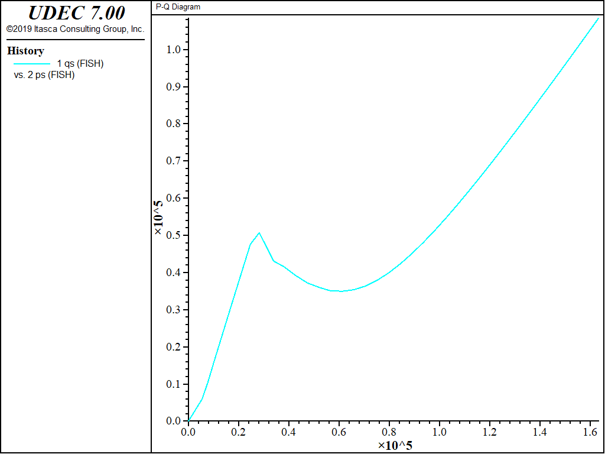

P-Q Stress Diagram
Often, the user may wish to print or plot problem variables that are not directly accessible through the UDEC HISTORY command. It is quite simple for the user to write a FISH function that will calculate the desired variable directly in UDEC.
The data file “pq.dat” illustrates the use of FISH to calculate the stress point p,q, and to plot a \(p-q\) diagram via the FISH HISTORY command. The generalized stress components \(p\) and \(q\) are expressed in terms of principal stresses:
\[\begin{split}\begin{align}
p &= - {1 \over 3} (\sigma_{1}' + \sigma_{2}' + \sigma_{3}') \\
q &= {1 \over \sqrt{2}} \sqrt{{(\sigma_1 - \sigma_2)}^2 + {(\sigma_2 - \sigma_3)}^2 + {(\sigma_1 - \sigma_3)}^2 }
\end{align}\end{split}\]
Note that \(p\) is an effective pressure, defined in terms of the effective principal stresses.
Data File: pq.dat
model new
model title 'P-Q Diagram'
block create polygon 0 0 0 20 10 20 10 0
block zone gen quad 4
program call 'pq.fis'
fish set x_zon = 2.5
fish set y_zon = 10.0
block gridpoint apply velocity-x 0.0 range pos-x -.01 .01 pos-y 0 20
block gridpoint apply velocity-y 0.01 range pos-x 0 10 pos-y -.1 .1
block gridpoint apply velocity-y -0.01 range pos-x 0 10 pos-y 19.9 20.1
block property material 1 density 2000 bulk 2e8 shear 1e8
block contact property material 1 stiffness-normal 1.33e7 ...
stiffness-shear 1.33e7 friction 30.0
block mechanical damping global
fish history qs
fish history ps
block cycle 100
block gridpoint apply velocity-y 0.0 range pos-x 0 10 pos-y -.1 .1
block gridpoint apply velocity-y 0.0 range pos-x 0 10 pos-y 19.9 20.1
block gridpoint apply velocity-x -.01 range pos-x 9.9 10.1 pos-y -.1 20.1
block cycle 300

{kind=link}
Figure 1: p-q plot
| Was this helpful? ... | UDEC © 2018, Itasca | Updated: Mar 15, 2024 |